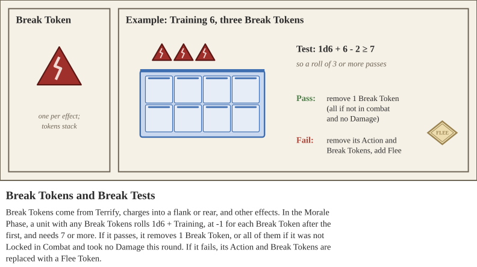
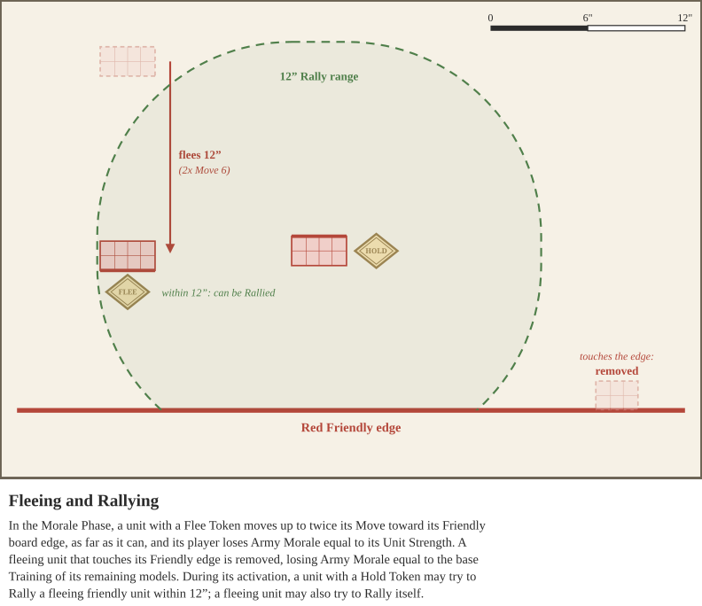

The fighting spirit of a warrior can be bolstered and broken through many different game rules and effects. Whether urged forward by the sight of their leaders and army’s great banner, or sent scurrying due to overwhelming losses, the psychology of a fighting soldier is dependent upon how well the general controls the battle.
Psychology is broken up into two different categories - Army Morale and Unit Morale. Army Morale is reduced by enemy attacks, through Shooting hits and Damage suffered. Unit Morale is affected by Break Tokens, which force the unit to take Break tests.
Army Morale is a way to represent the determination and bravery of the warriors on the battlefield.
Before the game begins, each player will determine their Starting Army Morale. This value is the sum of the Training Values of every model in their army list. For each unit, multiply their Training Value by the number of models - not their Unit Strength. For Chariot and Elephant units, count each driver, mahout, and crewman as a model; horses and elephants do not count. And then sum the values generated by each unit in the army list.
Effects that give bonuses for Break tests, grant Training bonuses based on placement on the battlefield, or other effects that do not affect the unit’s Training score when off the battlefield do not modify Army Morale generated.
Army Morale is lost from Hits from Shooting Attacks, and Damage from Shooting and Melee Attacks. Army Morale can also be lost by failing a Charge, and by special abilities.
Losing Army Morale. Whenever a unit suffers Damage for any reason, its controller loses Army Morale for that Damage as normal. Whenever a unit is destroyed or leaves the battlefield for any reason, including a Reserve unit destroyed for not arriving by the fourth round, its controller loses the rest of the Army Morale that unit contributed at the start of the game.
The Morale Phase begins with the Update Step. During this step, each player will determine what category on the below Army Morale Table that their force is currently in. Divide the current Army Morale of each player’s army by their Starting Army Morale to determine the Morale % and matching Category. Apply Training Penalty tokens as needed as the army suffers due to the accumulated Morale losses. A player with no units left on the battlefield is also Completely Routed, even if they still have units in Reserve.
These penalties have no effect on Army Morale generated or lost by Damage or other effects. For example, a unit suffering from Unease does not lose the army 1 less Army Morale per model lost due to Damage. The amount lost is the base Training score of the model.
| Morale % | Category | Effect |
|---|---|---|
| Greater Than 75% | Holding Strong | No penalties, hold fast warriors! |
| 75% or less | Unease | -1 Training to Mercenary and Levy units |
| 50% or less | Panic | -1 Training to all units |
| 25% or less | Mass Panic | -2 Training to all units. Mercenary and Levy units automatically fail Break Tests and cannot be Rallied |
| 0% or less | Complete Rout | Lose |
Unit Morale is tracked by a unit’s Training value and by Break tokens. Training represents not just the martial prowess drilled into a fighter, but also that unit’s ability to remain fighting amongst the terrifying chaos of the battlefield.
Units can gain Break tokens several different ways. Units can be Terrified by larger or horrifying foes, which might cause them to Break. Closed order units can be flanked from their sides or from their rears, causing them to gain Break tokens. Units that are greatly wounded will gain Break tokens, and these tokens can also be gained from special abilities.
During this step, every unit with any Break tokens takes a Break test. The first Break token is free: for each Break token after the first, they take a -1 penalty to the test. To avoid breaking, the unit rolls 1d6 + their Training Value and must total 7 or higher. If they pass, remove 1 Break token, or all of them if the unit was not Locked in Combat and suffered no Damage this round.
If they fail the test, remove any Action and Break Tokens next to them and attach a Flee Token to that unit. It does not lose Army Morale yet; that happens in the Fleeing Step.

Some effects force a unit to take a Fear Test. To pass, the unit rolls 1d6 + its Training Value, minus the number of Break Tokens on the unit, and must total 7 or higher. Unlike a Break Test, every Break Token counts against a Fear Test, including the first. A Fear Test is not a Break Test: failing it does not make the unit Flee. Instead, the effect that caused the test states exactly what happens on a failure.
During this step, every unit with a Flee Token moves up to twice its Move value toward its Friendly board edge, and must move as far as it can. The player loses Army Morale equal to the Unit Strength of the fleeing unit. A unit that Flees while Locked in Combat leaves the Melee and is no longer Locked in Combat.
Open Order units not in Cohesion must move in such a way that they gain Cohesion. If they are not able to maintain Cohesion after a Flee move, the unit is considered to have run off the board and is removed.

During normal gameplay it is not possible to move off the board, but a unit that is moving due to Fleeing can run off the board. Any units with Flee Tokens that are touching their Friendly board edge or off of the Board are removed from play immediately. The player loses Army Morale equal to the sum of the base Training values of the remaining models in the unit as it leaves play.
After a unit moves, it may attempt to Rally a unit in your army instead of Shooting. Units with Flee Tokens may Rally themselves, and Units with Hold Tokens may Rally other units within 12” that have Flee Tokens that are friendly to them. To Rally, the Rallying unit rolls 1d6 + their Training Value - the number of Break Tokens on the selected unit. For units Rallying other units, they use their own Training Value, but still take into account any Break Tokens on the unit they are attempting to Rally.
If the Rallying unit rolls a 7 or greater they succeed, remove the Flee Token attached to the selected unit. If the unit rolls less than 7 they fail, and the selected unit retains the Flee Token.
It is not possible to Rally units under certain conditions. Levy and Mercenary units have special rules that can prevent rallying, as well as other units with similar special rules.
A unit that attempted to Rally itself or another unit may not Shoot during this Activation. But it may use similar abilities in the Combat Phase when able, such as Throwing Weapons.
Not every army fields them, but Mercenary, Levy, and Noble units interact with Army Morale in ways worth knowing before battle.
Levy units are reluctant conscripts. A Closed Order Levy unit does not count its rear rank toward Unit Strength (unless it has only one rank), and an Open Order Levy unit halves its Unit Strength, rounded up. Mercenary units fight for pay: they may Rally themselves, but other units cannot Rally them unless the Rallying unit has the Noble special rule, or is a Mercenary unit with a greater base Training value. Mercenary units can only Rally other Mercenary units.
Both are the first to waver as the army’s fortunes fall. At Unease, Mercenary and Levy units suffer -1 Training while the rest of the army is unaffected. At Mass Panic, Mercenary and Levy units automatically fail Break Tests and cannot be Rallied, which usually means they leave the battle.
Nobles hold these units together. A unit with the Noble special rule gains +2 when Rallying other units and may Rally Mercenary units. During Mass Panic, Mercenary and Levy units within 24” of a Noble unit can still be Rallied, though they still automatically fail their Break Tests. Several Special Characters change these rules: a Lord grants Noble, a Tribal Leader grants Noble and removes Levy, and a Taskmaster removes Levy at a cost.